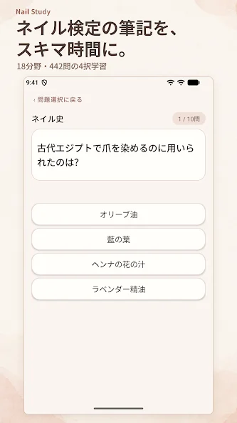
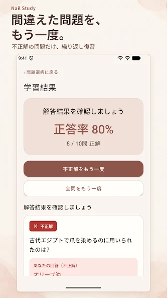
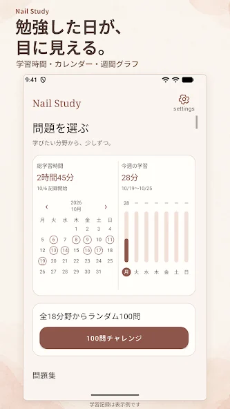

18分野・442問を、4択で。
爪や皮膚の構造、衛生管理、ネイルケア、色彩、接客など。学びたい分野を選び、1問ずつ正解を確認できます。
爪や皮膚の構造、衛生管理、ネイルケア、色彩、接客など。学びたい分野を選び、1問ずつ正解を確認できます。
結果画面から不正解の問題だけを復習。全問の再挑戦もできるので、苦手な内容を繰り返し確かめられます。
総学習時間、学習日カレンダー、今週のグラフで振り返り。全18分野から出題する100問チャレンジも用意しています。



学習を中断しても、続きから再開できます。爪の形状など、一部の問題にはイラストも掲載しています。
紹介内容・画像はGoogle Playの公式掲載（2026年10月22日確認）をもとに構成しています。筆記の補助学習として、お使いの教材や受験する試験の公式案内と併せてご活用ください。
情報の取り扱いについては、Nail Study専用のプライバシーポリシーをご確認ください。